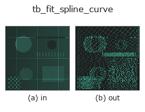

typed op• Datenarten: points → points
• Aufruf: fullseye.apply(img, "tb_fit_spline_curve", a=0.5, b=0.5) (das 2-D-Modell ist ein Bild plus zwei skalare Regler a,b∈[0,1])

*Die Abbildung ist die tatsächliche Ausgabe auf einer synthetischen 128×128-Eingabe. Links Eingabe, rechts Ausgabe. Punktwolken als Draufsicht-Streudiagramm (Helligkeit = z), 1-D-Reihen als Linie, Volumen als Maximum-Projektion entlang z, Videos als mittleres Bild, komplexe Bilder als Betrag; Rückgabewerte, die kein Bild ergeben, werden als Werte gezeigt.*
Regler a durchfahren (0,1 / 0,5 / 0,9, der andere Regler auf Standard):
▸ tb_fit_spline_curve: knob a sweep (docs site)
*Regler b ändert die Ausgabe nicht (gemessen: identisch bei 0,1 / 0,5 / 0,9).*
Stufen (die vorangehenden Ops → dieser Op, von links nach rechts):
▸ tb_fit_spline_curve: stages (docs site)
Auf anderen Bildern (synthetische Szene / Foto / Münzen. Obere Reihe: Eingaben, untere Reihe: deren Ausgaben. Regler auf Standard):
▸ tb_fit_spline_curve: other inputs (docs site)
Glättet eine geordnete Folge von 3D-Punkten mit einem B-Spline und resamplet sie. → (M,3). Für die Glättung verrauschter Trajektorien/Kanten.
> Die ausführliche Beschreibung unten ist der Originaltext — Zusammenfassung und Überschriften sind übersetzt.
scipy.interpolate.splprep/splev。smooth=0 は補間、>0 で平滑。n=出力点数(既定=入力数)。
`splprep([x, y, z], s=smooth, k=k)` でパラメトリック B スプライン(パラメータ u∈[0,1]、
scipy 既定の弦長パラメータ化)を当て、`u = linspace(0, 1, n) で splev` 評価した
(n,3) float64 を返す。u 等間隔なので出力点は弧長で厳密に等間隔ではない(弧長等間隔が
要るなら結果を `resample_uniform` に通す)。
• `smooth`: scipy の平滑化条件 s。残差二乗和が s 以下になる最少ノットで当てる。
0 なら全点を通る補間、大きいほど滑らか(単位は座標の二乗)。
• `k: スプライン次数(既定 3)。点数 N が k 以下だと ValueError`。
• `n`: 出力点数。None で入力点数。
• 入力は index 順に並んだ (N,3) を前提とし、形状検証は点数以外に無い。
ノイズのあるエッジ点列や軌跡を平滑してから `curvature_torsion / frenet_frame` に
渡す前段として使う。tck を持ち回りたい場合は `fit_bspline_curve / eval_bspline_curve`。
2-D 進化レジストリへ橋渡しした 3d の op `fit_spline_curve。実装は同じで、呼び出し規約だけ op(v, a, b) に合わせてある。a が k(既定 3)を振る。b` は未使用。
• Katalog der Beispieldaten (Download-URLs / Lizenzen) — 2-D nutzt skimage.data (BSD/Public Domain) plus synthetische Bilder, 3-D nennt Download-URLs echter Datenquellen (Stanford, PDS, …).
• Herkunft und Literatur der Operatoren — die Quellen der Forschung/Verfahren, auf denen diese Operatorfamilie beruht.
Das Programm unten ist nachweislich lauffähig (gleiche Eingabe wie die Abbildung). In der Studio-Hilfe wird dieser Block zu Schaltflächen, die es sofort laden und ausführen.
img_to_points 0.50 0.50 tb_fit_spline_curve 0.50 0.50
▸ Load this pipeline · Load & run
Die folgenden Beispiele rufen den zugrunde liegenden Ledger-Op fit_spline_curve auf. Dieser Brücken-Op ist dieselbe Implementierung, angepasst an die Konvention fn(v, a, b); das Verhalten gilt unverändert (nur die Aufrufform unterscheidet sich).
• bspline_freeform — py -3.11 examples_3d/bspline_freeform.py
points als Eingabe)identity · tb_points_to_voxel · tb_estimate_point_normals · tb_iss_keypoints · tb_angle_3points · tb_project_points · tb_render_point_depth · tb_statistical_outlier_removal
typed)tb_points_to_voxel · tb_estimate_point_normals · tb_iss_keypoints · tb_angle_3points · tb_project_points · tb_render_point_depth · tb_statistical_outlier_removal · tb_radius_outlier_removal
*Provenance: ops.py — 2D Operator-Registry. Diese Notiz wird von tools/opdocs.py md erzeugt (nicht von Hand bearbeiten).*
© 2026 Kazufumi Furuse — Fullseye operator documentation. Licensed under Apache-2.0.
{kind=link}
{kind=link}
{kind=link}